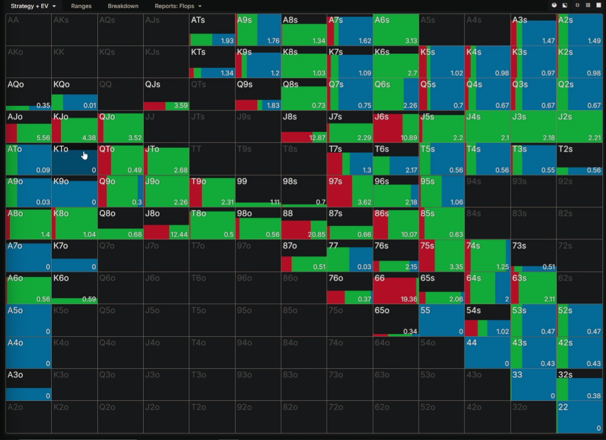
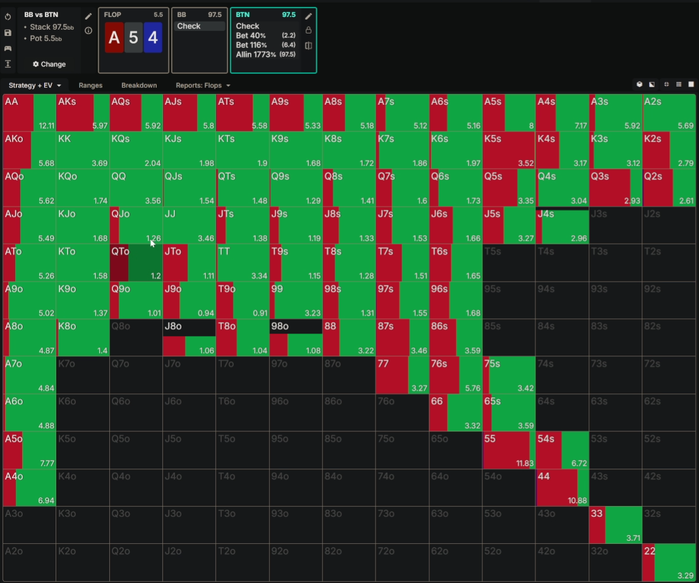
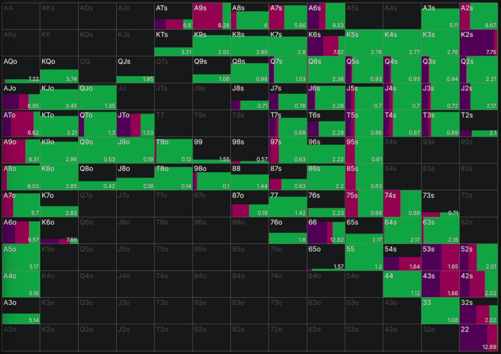

Si dudamos de si cbetear o no, hacerlo.
Si dudamos de si apostar grande o pequeño, hacerlo pequeño.
Si el rival overfoldea, cuidado con las demás calles — ajustar rango.
A más equity, más quieres agrandar el bote.
Hay que ganar EV, no ganar la MANO. El objetivo no es proteger la mano sino maximizar EV en cada spot.
Cuanto más fácil sea de probetear de bluff en turn, más preferiremos apostarlos para evitar ese bluffing spot.
A menos EQ → menos BET (controlar bote). A más EQ → más BET (agrandar bote).
Siendo BTN, preferimos board rainbow porque como tienes más EQ y más estático sea el board, más veces se mantendrá esa equity hasta el river.
Cuando pasamos de un board rainbow a FD siempre sera mas polarizado, ya sea aumentando el tamaño/ chequeando más.
Usar un tamaño mas pequeño hace que podamos tener mas cbet
| Tipo de Board | Tamaño | Estrategia |
|---|---|---|
| 3 Broadways | Pequeño (40%) | Mucho bet Mucho bet a 40% |
| Broadway-Mid-Low (K72) | 25% | Range Haremos range |
| Boards Doblados Altos | 25% | Range bet |
| Boards Doblados Medios | 25%/40% | Polarizado No lo mismo K77 que 668ss |
| Boards Doblados Bajos | 40% | Range bet |
| 765fd (muy coordinado) | 40% | PolarizadoTanta coordinación → muchas cartas te joden |
| Board | Tipo | Size | Estrategia | Nota clave |
|---|---|---|---|---|
|
K♠
Q♥
J♦
|
3 Broadways | 40% | Range bet | Mucho bet, board conecta bien con BTN |
|
A♦
K♣
T♠
|
3 Broadways | 40% | Range bet | Ventaja de equity BTN clara |
|
K♠
7♦
2♥
|
Broadway-Mid-Low | 25% | Range bet | Dry rainbow, range con size pequeño |
|
A♥
6♠
2♦
|
Broadway-Mid-Low | 25% | Range bet | Dominio total BTN, range pequeño |
|
K♣
K♠
7♦
|
Doblado Alto | 25% | Range bet | Board estático, range 25% eficiente |
|
7♥
7♦
2♣
|
Doblado Medio | 25-40% | Polarizado | No lo mismo que 668ss, analizar |
|
6♠
6♣
8♥ ss
|
Doblado Medio | 40% | Polarizado | Con flush draw → tamaño mayor |
|
3♥
3♦
9♣
|
Doblado Bajo | 40% | Range bet | BB no conecta, range grande |
|
7♥
6♠
5♦ fd
|
Muy coordinado | 40% | Polarizado | Demasiadas cartas que dañan al BTN |
|
8♦
6♥
5♥
|
Muy coordinado | 40% | Polarizado | FD + OESD → polarizar, no range |
Usar tamaño grande cuando: ventaja de nuts (overpairs, sets…), el value es vulnerable, no hay mucha mano media valuebeteable.
Hay una zona elástica que paga a pequeño pero no a grande. Con medio bote o pequeño no castigas suficiente.
EV entre 75% y 110% es prácticamente el mismo, pero jugar range no
Aquí te están overcalleando — hay que ser muy agresivo en turn. Su rango está debilitado y sobre-representado en manos medias que no pueden seguir pagando mucho.

KTo con el K del palo no se tira ni peter. Tiene suficiente equity y blockers para continuar. Es un call claro independientemente del tamaño.
Q9o, 6x → ni de coña. Sin suficiente equity ni posibilidad de mejorar a manos ganadoras. Fold sin dudar.
Cuanto más agresivo sea el tipo, más incentivo de betear (no le das la vuelta fácilmente en turn). Cuanto más pasivo, más fácil es robar en turn cuando pone face-up su mano.
K3 de diamantes: chequear porque no le gusta que le check-raiseen. Pero 87 de diamantes sí prefiere betear porque no sufre al raise y tiene más EQ.
En boards donde no hay thin value, si el rival paga más o menos bien pero en la delayed apuesta de más los Ax (debería chequear mucho más thin value), los manos de 0EQ tienen más incentivo a delayear.
En este tipo de boards los bluffs funcionan mejor a la delayed. Rainbow → mucho más tamaño pequeño. Con FD → aumentar más el tamaño.


Tras check-check el BB va a pobretear de más porque ha checkeado puro QJ, QT... no lo va a hacer en realidad. También los FDs van mixed y no va a valuebet tanto como el solver mete A6o o A7o.
Con todo esto vemos que tienen más incentivo de chequear manos medias del estilo A4, A3 para que el BB se pase blufeando.
No hay thin value, y el rival paga más o menos bien. Entonces si el rival paga razonablemente, los bluffs puros tienen más incentivo con delayed bets ya que el rival no ajustará su rango correctamente.
Los FDs van mixed en river — no sólo bluffs, algunos se convierten en value, otros siguen siendo bluffs dependiendo del runout y el rango del rival.
Axo bajos — no sobrevalorarlos y meterlos bastantes (A4o-A7o muy a menudo). Son buenos bluffs en muchos runouts pero en river es importante no exagerar su valor como mano hecha.
Bloqueas Axo con el palo (inelástico), bloqueas set up favorable. No sabemos si son value o bluff.
Más EQ, no sufren al raise, generan fold equity en manos medias del rival.
Aquí te están overcalleando — hay que ser muy agresivo en turn. Su rango está debilitado y sobre-representado en manos medias que no pueden seguir pagando mucho.
KTo con el K del palo no se tira ni peter. Tiene suficiente equity y blockers para continuar. Es un call claro independientemente del tamaño.
Q9o, 6x → ni de coña. Sin suficiente equity ni posibilidad de mejorar a manos ganadoras. Fold sin dudar.
Cuanto más agresivo sea el tipo, más incentivo de betear (no le das la vuelta fácilmente en turn). Cuanto más pasivo, más fácil es robar en turn cuando pone face-up su mano.
K3 de diamantes: chequear porque no le gusta que le check-raiseen. Pero 87 de diamantes sí prefiere betear porque no sufre al raise y tiene más EQ.
En boards donde no hay thin value, si el rival paga más o menos bien pero en la delayed apuesta de más los Ax (debería chequear mucho más thin value), los manos de 0EQ tienen más incentivo a delayear.
En este tipo de boards los bluffs funcionan mejor a la delayed. Rainbow → mucho más tamaño pequeño. Con FD → aumentar más el tamaño.
Tras check-check el BB va a pobretear de más porque ha checkeado puro QJ, QT... no lo va a hacer en realidad. También los FDs van mixed y no va a valuebet tanto como el solver mete A6o o A7o.
Con todo esto vemos que tienen más incentivo de chequear manos medias del estilo A4, A3 para que el BB se pase blufeando.
No hay thin value, y el rival paga más o menos bien. Entonces si el rival paga razonablemente, los bluffs puros tienen más incentivo con delayed bets ya que el rival no ajustará su rango correctamente.
Los FDs van mixed en river — no sólo bluffs, algunos se convierten en value, otros siguen siendo bluffs dependiendo del runout y el rango del rival.
Axo bajos — no sobrevalorarlos y meterlos bastantes (A4o-A7o muy a menudo). Son buenos bluffs en muchos runouts pero en river es importante no exagerar su valor como mano hecha.
Bloqueas Axo con el palo (inelástico), bloqueas set up favorable. No sabemos si son value o bluff.
Más EQ, no sufren al raise, generan fold equity en manos medias del rival.
Se mostrarán todos tus boards uno a uno.
Intenta recordar la estrategia antes de revelar la respuesta.
Califica cada card como Fácil o Difícil para programar el próximo repaso.